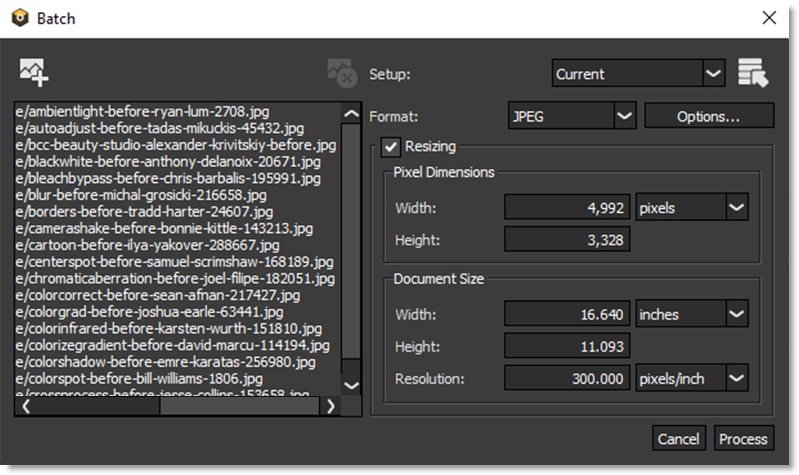

Batch
Batch Processing (Ctrl/Cmd+B)
Batch processes multiple files using the current setup or a previously saved setup.
Note: Batch Processing is only available in the standalone.
Add Image to Batch
Add a list of files to be processed in the Batch window.
Remove Selection
Removes selected images.
Setups
Filters are applied to the files in the batch list by using a Setup. A Setup takes a snapshot of the filters and masks applied to your image in the Layers window. Setups can be saved and loaded and are independent of the image they were originally applied to. A filter Setup can be saved using the File > Save Setup menu item prior to entering the Batch window. Select either a Setup from the Setup list or load one from disk using the Load Setup File icon.
Setup List
Shows the five most recently used Setups.
Load Setup File
Loads a setup from disk.
Format
Selects the file format and file format options for the saved files.
Bits/Channel
Original
Processes and saves the image in it’s original bit depth.
8 Bits/Channel
Processes and saves the image in 8 bits per channel.
16 Bits/Channel
Processes and saves the image in 16 bits per channel. Even if your original image is 8 Bits/Channel, you may want to change to the 16 bit setting. 16 bit processing takes longer to render, but will remove banding artifacts associated with 8 bit processing.
Resizing
Use resizing to adjust the pixel dimensions, document size and resolution of the batched images.
See the Resize controls to see how resizing works.
Cancel
Cancels the Batch process.
Process
Starts the Batch process.
Go to the Batch Tutorial to see how it works.